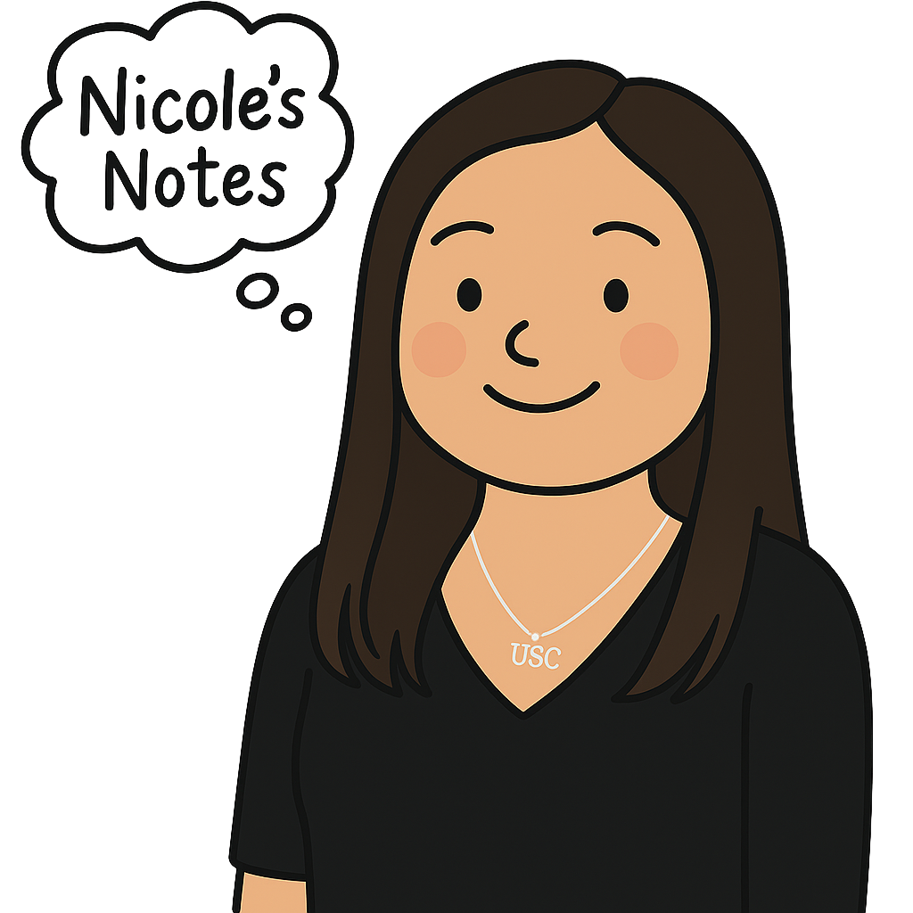

Academic Global Health Opportunities


Nairobi, Kenya 2025
In spring of 2025 I returned back to Nairobi to follow up on the youth public health ambassadors we trained the previous year. This time we went over the planned study and trained them in data collection. While with them we assisted in their collecting of over 500 surveys. It was great to see familiar faces and meet new community members as well!



CUGH Conference Atlanta, Georgia 2025
In Atlanta, I presented my research on road safety and trauma in Uganda. Preparing for this presentation has pushed me to refine my analysis and connect my findings to larger global health themes. I’m excited to share what I’ve learned and to meet other researchers working toward improving health outcomes around the world.


APRU Conference Bangkok, Thailand 2024
In Bangkok, I had a poster on my research on women’s health in Kibera. It was my first time at a conference and it was very interesting being surrounded by researchers and professionals dedicated to improving health equity. The conference broadened my perspective on global collaboration and gave me confidence in my ability to contribute to meaningful public health work.


Kampala and Lira, Uganda 2024
In Lira, I led a project examining road injury and trauma, collaborating with local partners to understand how infrastructure and behavior influence safety. I also helped run focus groups in Kampala about burns and burn treatment in urban informal settlements. The experience reshaped how I think about public health, showing me the value of integrating local voices and context into research and solutions.


Biology and Global Health, Oxford 2024
At Oxford, I joined a summer program that gave me the opportunity to learn from incredible professors and students from around the world and hear a lecture from their field of study from HIV, to malaria, to the UK health system. One of my favorite memories was going punting with a professor while discussing his research in Uganda over tea sandwiches. The experience showed me how casual conversations can lead to meaningful exchanges of ideas and inspired me to approach learning as something that extends far beyond the classroom.


Gerontology in Seoul, South Korea 2024
In Seoul, I took part in activities and lectures to learn about gerontology and wellness in a rapidly aging country. We visited different senior centers and learned about what they provide to the older population, wore an aging suit that mimics the physical challenges with aging, and learned about the importance of aging with dignity. While doing a paper-folding craft to support hand dexterity, I chatted with an older Korean gentleman about our favorite foods and daily life. That simple, genuine interaction taught me how shared interests can bridge cultural and generational gaps and helped me appreciate the beauty of everyday human connection.


Nairobi, Kenya 2024
In spring of 2024 I went to Kibera, a large urban informal settlement, to help train a group of young women to be public health ambassadors. We went over basic public health like sanitation, nutrition, and women's health. We talked about public health issues in their community and determined we would make a study on womens health in Kibera.


Gerontology in Medillín, Colombia 2023
In Medellín, I joined a USC Maymester focused on aging populations and Alzheimer’s. We met the doctor who discovered the connection between a familial gene and early onset Alzheimer’s. A short taxi ride turned into one of the most impactful lessons of my life when I discovered our driver was part of the long-term Alzheimer’s study. His openness and willingness to contribute to science, knowing it may not help him personally, reminded me of the human side of research and the importance of empathy in global health.
Study Abroad at John Cabot University in Rome, Italy 2021
John Cabot University in Rome hosts USC Spring Admits for the Freshman Fall quarter of the Freshman year https://www.johncabot.edu/admissions/undergraduate/university-of-southern-california-course-transfer-plan. This is a an opportunity to earn a full semester's of credit while living and studying in Rome's Trastevere neighborhood, before enrolling at USC for the Spring semester.